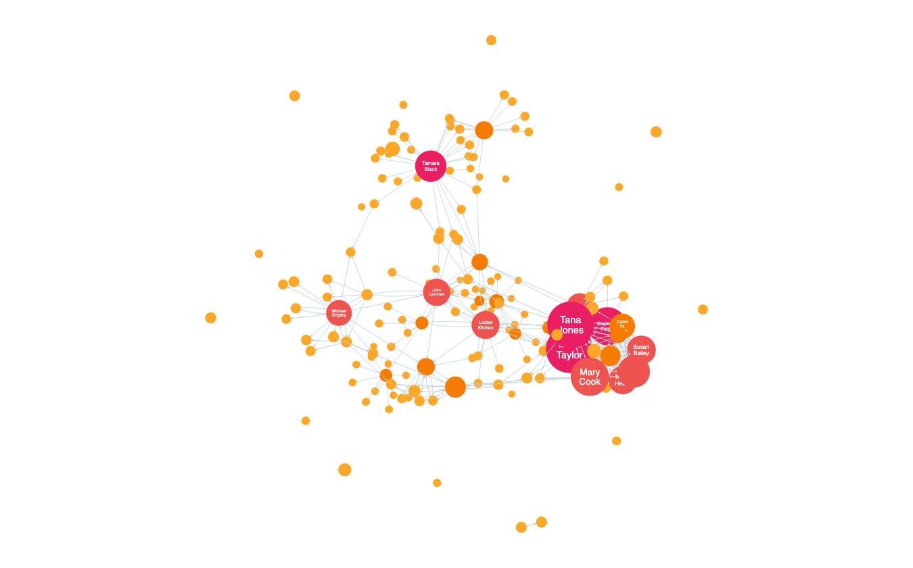
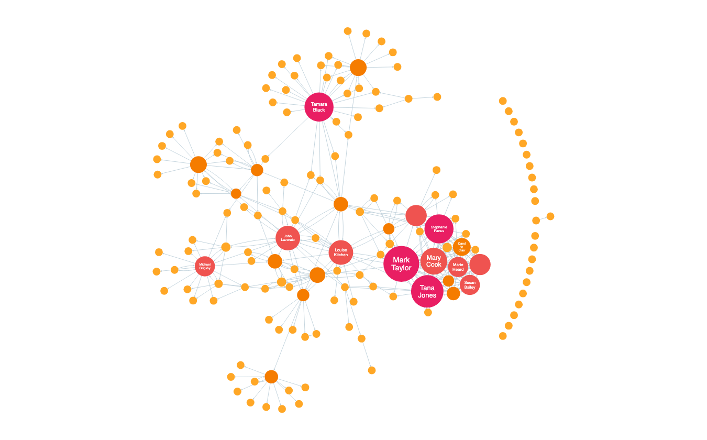
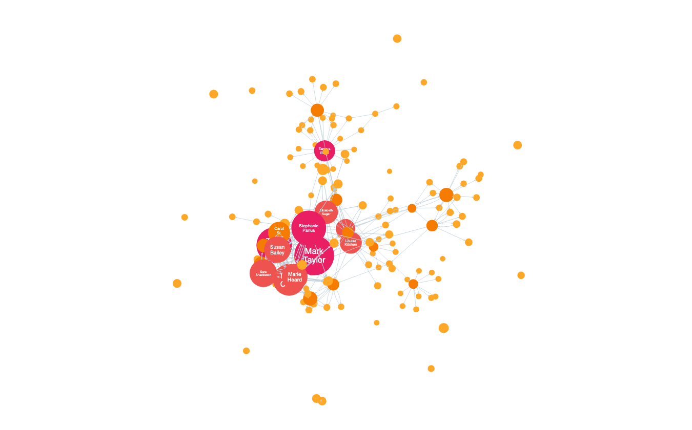
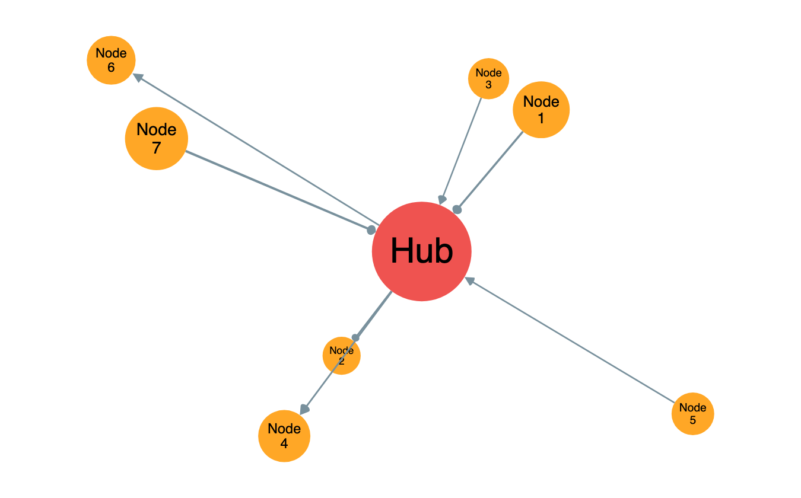
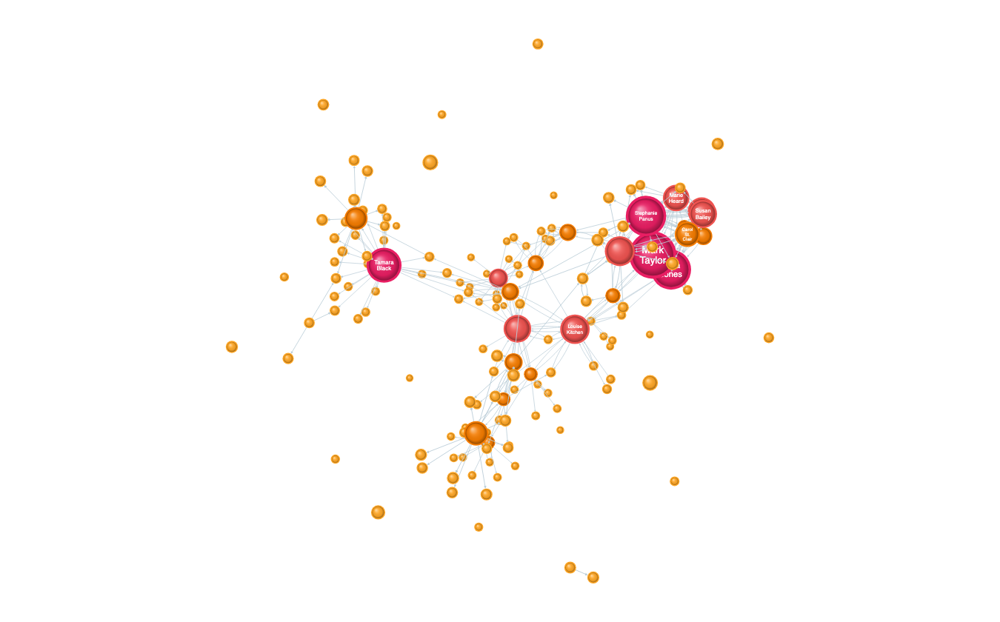

3D View
The 3D view draws the chart through an orbit camera. Nodes take an optional z coordinate, and users can rotate the network to pull apart clusters that overlap in 2D. It is the same chart: items, styles, events and the rest of the API work as before.

Turning on the 3D View#
Set the chart view3d option and run a force layout:
chart.options({ view3d: true });
chart.layout('organic'); // places nodes in x, y and z, then fits
Turning it off restores the 2D picture; z values are kept but ignored. With a level camera and every z at 0, the 3D view draws the same picture as 2D, apart from arrowheads (see Links and Arrowheads).

Node Depth#
Give nodes a z property in world units. Positive z is away from the viewer when the camera is level. Nodes without z sit at 0.
chart.load({ type: 'LinkChart', items: [
{ type: 'node', id: 'a', x: 0, y: 0, z: -150 },
{ type: 'node', id: 'b', x: 120, y: 40, z: 200 },
{ type: 'link', id: 'ab', id1: 'a', id2: 'b', a2: true },
]});
The Camera#
chart.camera() returns the camera, and chart.camera(values, { animate, time }) changes it:
| Property | Meaning |
|---|---|
yaw | Turn about the vertical axis, in radians. |
pitch | Tilt up or down, in radians, kept just short of ±90°. |
focal | Distance from the eye to the orbit pivot, in world units (default 1500). Smaller values give stronger perspective. |
targetX, targetY, targetZ | The orbit pivot. |
chart.camera({ yaw: Math.PI / 4, pitch: -0.3 }, { animate: true, time: 400 });
zoom('fit') moves the pivot to the middle of the nodes. If the drawing is too big to sit in front of the camera, it also moves the camera back by raising focal. Fit never brings the camera closer than the focal you last set. Zoom and pan work as in 2D: pan is a screen-plane offset applied after the camera turns, so viewOptions(), zoom() and pan() behave as before. pan('selection') moves the pivot to the selection, which brings a clicked node to the centre.

Interaction#
| Gesture | Effect in 3D |
|---|---|
| Left-drag on the background | Rotate (also in handMode) |
| Right-drag, or shift-drag | Pan |
| Alt-drag | Selection marquee |
| Wheel, double-click | Zoom, as in 2D |
| Left-drag on a node | Move it in the plane facing the camera, at its own depth |
| Click where nodes overlap | Selects the nearest one |
| Navigation arrows | Rotate by 22.5° (the arrow keys still pan) |
The browser's context menu is suppressed in 3D, but the context-menu event still fires. viewCoordinates(x, y, z) projects a world point (null when it is behind the camera). worldCoordinates(x, y) returns the point on the camera-facing plane through the pivot, including z.
Layouts#
With view3d on, every layout has depth. organic, tweak and structural place nodes in 3D directly; the largest component sits in the middle, and smaller components are spread on a sphere around it rather than on a flat arc. radial and lens turn their rings into concentric spheres around the same centre. hierarchy and sequential become cone trees: levels stay on their axis and each level is a ring around it. Pass dimensions: 2 or 3 in the layout options to choose explicitly.
Links and Arrowheads#
Arrowheads on straight links are 3D cones pointing along the link in space. They shorten as the link turns toward or away from you, look like small discs when seen end-on, and shrink with distance. They follow the same size rule as 2D heads, so side-on they look the same.
Links start and end at the rim of each node's disc as drawn, never at its centre, and each node covers the ends and arrowheads of its own links. A link leaving toward the camera starts where it clears the disc on screen, so lines and arrowheads stay off the node's label. A link between other nodes that passes in front of a node in 3D still draws over it.

Curved links (reciprocal pairs, off, horizontal or vertical paths) and links with b1 or b2 back-off are drawn in screen space and keep the flat 2D head.
Appearance Options#
view3d can be an object instead of true:
| Option | Default | Effect |
|---|---|---|
fog | false | Fade with depth: opacity falls from 1 on the nearest node to 0.2 on the farthest. |
shading | false | Shade round nodes like spheres, with a highlight at the top left and a darker rim. Box nodes, donuts and images are not shaded. |
labelMinRadius | 0 | Hide labels on discs smaller than this radius on screen, in px (for example 16). The selected node keeps its label. |
chart.options({ view3d: { fog: true, labelMinRadius: 16 } });
fog: true: the far side fades.
shading: true: nodes shaded like spheres.Without these options, nodes are flat discs facing the camera, styled exactly as in 2D. Give them a border (b, bw) for a rim.
Canvas and WebGL#
Both modes draw links, nodes, halos and open combos far to near, so nearer items cover farther ones. The overview window shows the scene as the camera sees it, and clicking it pans there. Combo children keep their depth relative to the combo as it moves.
Limitations#
- Nodes are flat discs facing the camera; there is no real lighting model.
- Map mode is always 2D:
view3dis ignored while a map is shown. Bands and the time bar stay 2D. - Labels, glyphs and arrowheads are drawn on the 2D canvas. In WebGL mode they sit above every node body and link; in canvas mode they are depth-sorted with their node.
- Arrangements inside a combo (lens, grid, concentric, sequential) are flat: the children lie in the combo's own depth plane.
The screenshots on this page come from tools/make_3d_screenshots.mjs. Run node "API Document/tools/make_3d_screenshots.mjs" from the repository root to redraw them with the current library.